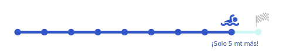
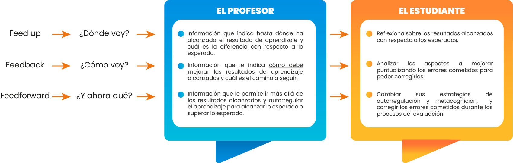

X

Proalimentación de los aprendizajes
¿Cómo ofrecer a los estudiantes estrategias destinadas a reducir el diferencial que separa el nivel de logro alcanzado con el nivel de logro esperado de modo que una vez modificado alcance dicho nivel o lo supere?

Atrás
Siguiente